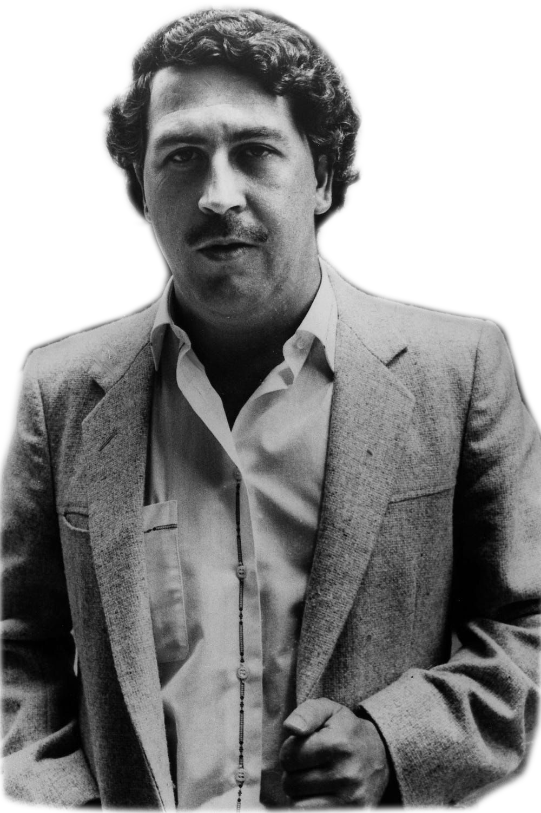

Pablo Emilio Escobar Gaviria was born on 1 December 1949, in Rionegro, in the Antioquia Department of Colombia. He was the third of seven children of the farmer Abel de Jesús Dari Escobar Echeverri (1910–2001), with his wife Hermilda de Los Dolores Gaviria Berrío (d. 2006), an elementary school teacher.
Raised in the nearby city of Medellín, Escobar is thought to have begun his criminal career as a teenager, allegedly stealing gravestones and sanding them down for resale to local smugglers. His brother, Roberto Escobar, denies this, instead claiming that the gravestones came from cemetery owners whose clients had stopped paying for site care and that he had a relative who had a monuments business. Escobar's son, Sebastián Marroquín, claims his father's foray into crime began with a successful practice of selling counterfeit high school diplomas, generally counterfeiting those awarded by the Universidad Autónoma Latinoamericana of Medellín. Escobar studied at the University for a short period, but left without obtaining a degree.
Escobar eventually became involved in many criminal activities with Oscar Benel Aguirre, with the duo running petty street scams, selling contraband cigarettes, fake lottery tickets, and stealing cars. In the early 1970s, prior to entering the drug trade, Escobar acted as a thief and bodyguard, allegedly earning US$100,000 by kidnapping and holding a Medellín executive for ransom. Escobar began working for Alvaro Prieto, a contraband smuggler who operated around Medellín, aiming to fulfill a childhood ambition to have COL $1 million by the time he was 22. He is known to have had a bank deposit of COL 100 million (more than US$3 million), when he turned 26.
In The Accountant's Story, Roberto Escobar discusses how Pablo rose from middle-class simplicity and obscurity to one of the world's wealthiest men. Beginning in 1975, Pablo started developing his cocaine operation, flying out planes several times, mainly between Colombia and Panama, along smuggling routes into the United States. When he later bought fifteen bigger airplanes, including a Learjet and six helicopters, a close friend of Pablo's died during the landing of an airplane along with the plane being destroyed, according to his son. Pablo reconstructed the airplane from the scrap parts that were left and later hung it above the gate to his ranch at Hacienda Nápoles.
In May 1976, Escobar and several of his men were arrested and found in possession of 18 kilograms (39 lb) of white paste, attempting to return to Medellín with a heavy load from Ecuador. Initially, Pablo tried to bribe the Medellín judges who were forming a case against him and was unsuccessful. After many months of legal wrangling, he ordered the murder of the two arresting officers, and the case was later dropped. Roberto Escobar details this as the point where Pablo began his pattern of dealing with the authorities through either bribery or murder.
Soon, the demand for cocaine greatly increased in the United States, which led to Escobar organizing more smuggling shipments, routes, and distribution networks in South Florida, California, Puerto Rico, and other parts of the country. He and cartel co-founder Carlos Lehder worked together to develop a new trans-shipment point in the Bahamas, an island called Norman's Cay about 350 km (220 mi) southeast of the Florida coast. According to his brother, Escobar did not purchase Norman's Cay; it was instead a sole venture of Lehder's. Escobar and Robert Vesco purchased most of the land on the island, which included a 1-kilometre (3,300 ft) airstrip, a harbor, a hotel, houses, boats, and aircraft, and they built a refrigerated warehouse to store the cocaine. From 1978 to 1982, this was used as a central smuggling route for the Medellín Cartel. With the enormous profits generated by this route, Escobar was soon able to purchase 20 square kilometres (7.7 sq mi) of land in Antioquia for several million dollars, on which he built the Hacienda Nápoles. The luxury house he created contained a zoo, a lake, a sculpture garden, a private bullring, and other diversions for his family and the cartel.
In 1982 Escobar was elected as an alternate member of the Chamber of Representatives of Colombia, as part of a small movement called Liberal Alternative. Earlier in the campaign he was a candidate for the Liberal Renewal Movement, but had to leave it because of the firm opposition of Luis Carlos Galán, whose presidential campaign was supported by the Liberal Renewal Movement. Escobar was the official representative of the Colombian government for the swearing-in of Felipe González in Spain.
Escobar quickly became known internationally as his drug network gained notoriety; the Medellín Cartel controlled a large portion of the drugs that entered the United States (including Puerto Rico), Mexico, the Dominican Republic, Venezuela, and Spain. The production process was also altered, with coca from Bolivia and Peru replacing the coca from Colombia, which was beginning to be seen as substandard quality than the coca from the neighboring countries. As demand for more and better cocaine increased, Escobar began working with Roberto Suárez Goméz, helping to further the product to other countries in the Americas and Europe, as well as being rumored to reach as far as Asia.
It is alleged that Escobar backed the 1985 storming of the Colombian Supreme Court by left-wing guerrillas from the 19th of April Movement, also known as M-19. The siege, a retaliation motivated by the Supreme Court studying the constitutionality of Colombia's extradition treaty with the U.S., resulted in the murders of half the judges on the court.[27] M-19 were paid to break into the Palace and burn all papers and files on Los Extraditables, a group of cocaine smugglers who were under threat of being extradited to the U.S. by the Colombian government. Escobar was listed as a part of Los Extraditables. Hostages were also taken for negotiation of their release, thus helping to prevent the extradition of Los Extraditables to the U.S. for their crimes.
During the height of its operations, the Medellín Cartel brought in more than US$70 million per day (roughly $26 billion in a year). Smuggling 15 tons of cocaine per day (worth more than half a billion dollars) into the United States, the cartel spent over US$1,000 per week purchasing rubber bands to wrap the stacks of cash they received, storing most of it in their warehouses. Ten percent (10%) of the cash had to be written off per year because of "spoilage", due to rats creeping in and nibbling on the bills they could reach.
When questioned about the essence of the cocaine business, Escobar replied with "[the business is] simple: you bribe someone here, you bribe someone there, and you pay a friendly banker to help you bring the money back." In 1989, Forbes magazine estimated Escobar to be one of 227 billionaires in the world with a personal net worth of approaching US$3 billion while his Medellín Cartel controlled 80% of the global cocaine market. It is commonly believed that Escobar was the principal financier behind Medellín's Atlético Nacional, which won South America's most prestigious football tournament, the Copa Libertadores, in 1989.
While seen as an enemy of the United States and Colombian governments, Escobar was a hero to many in Medellín, especially to the poor. He was a natural at public relations, and he worked to create goodwill among the poor of Colombia. A lifelong sports fan, he was credited with building football fields and multi-sports courts, as well as sponsoring children's football teams. Escobar was also responsible for the construction of houses and football fields in western Colombia, which gained him popularity among the poor. He worked hard to cultivate his Robin Hood image and frequently distributed money through housing projects and other civic activities, which gained him notable popularity among the locals of the towns that he frequented. Some people from Medellín often helped Escobar avoid police capture by serving as lookouts, hiding information from authorities, or doing whatever else they could to protect him. At the height of his power, drug traffickers from Medellín and other areas were handing over between 20% and 35% of their Colombian cocaine-related profits to Escobar, as he was the one who shipped the cocaine successfully to the United States.
The Colombian cartels' continuing struggles to maintain supremacy resulted in Colombia quickly becoming the world's murder capital with 25,100 violent deaths in 1991 and 27,100 in 1992. This increased murder rate was fueled by Escobar giving money to his hitmen as a reward for killing police officers, over 600 of whom died as a result.
After the assassination of Luis Carlos Galán, the administration of César Gaviria moved against Escobar and the drug cartels. Eventually, the government negotiated with Escobar and convinced him to surrender and cease all criminal activity in exchange for a reduced sentence and preferential treatment during his captivity. Declaring an end to a series of previous violent acts meant to pressure authorities and public opinion, Escobar surrendered to Colombian authorities in 1991. Before he gave himself up, the extradition of Colombian citizens to the United States had been prohibited by the newly approved Colombian Constitution of 1991. This act was controversial, as it was suspected that Escobar and other drug lords had influenced members of the Constituent Assembly in passing the law. Escobar was confined in what became his own luxurious private prison, La Catedral, which featured a football pitch, a giant dollhouse, a bar, a Jacuzzi, and a waterfall. Accounts of Escobar's continued criminal activities while in prison began to surface in the media, which prompted the government to attempt to move him to a more conventional jail on 22 July 1992. Escobar's influence allowed him to discover the plan in advance and make a successful escape, spending the remainder of his life evading the police.
Following Escobar's escape, the United States Joint Special Operations Command (consisting of members of DEVGRU (SEAL Team Six) and Delta Force) and Centra Spike joined the manhunt for Escobar. They trained and advised a special Colombian police task force known as the Search Bloc, which had been created to locate Escobar. Later, as the conflict between Escobar and the governments of the United States and Colombia dragged on, and as the numbers of Escobar's enemies grew, a vigilante group known as Los Pepes (Los Perseguidos por Pablo Escobar, "People Persecuted by Pablo Escobar") was formed. The group was financed by his rivals and former associates, including the Cali Cartel and right-wing paramilitaries led by Carlos Castaño, who would later fund the Peasant Self-Defense Forces of Córdoba and Urabá. Los Pepes carried out a bloody campaign, fueled by vengeance, in which more than 300 of Escobar's associates, his lawyer and relatives were killed, and a large amount of the Medellín cartel's property was destroyed.
Members of the Search Bloc as well as Colombian and United States intelligence agencies either colluded with Los Pepes or moonlighted as both the Search Bloc and Los Pepes simultaneously in their efforts to find Escobar. This coordination was allegedly conducted mainly through the sharing of intelligence to allow Los Pepes to bring down Escobar and his few remaining allies, but there are reports that some individual Search Bloc members directly participated in missions of Los Pepes death squads. One of the leaders of Los Pepes was Diego Murillo Bejarano (also known as "Don Berna"), a former Medellín Cartel associate who became a rival drug kingpin and eventually emerged as a leader of one of the most powerful factions within the Self-Defence of Colombia.
In March 1976, the 26-year-old Escobar married María Victoria Henao, who was 15. The relationship was discouraged by the Henao family, who considered Escobar socially inferior; the pair eloped. They had two children: Juan Pablo (now Sebastián Marroquín) and Manuela.
In 2007, the journalist Virginia Vallejo published her memoir Amando a Pablo, odiando a Escobar (Loving Pablo, Hating Escobar), in which she describes her romantic relationship with Escobar and the links of her lover with several presidents, Caribbean dictators, and high-profile politicians.[39] Her book inspired the movie Loving Pablo (2017).
A drug distributor, Griselda Blanco, is also reported to have conducted a clandestine, but passionate, relationship with Escobar; several items in her diary link him with the nicknames "Coque de Mi Rey" (My Coke King) and "Polla Blanca" (White Cock).
After becoming wealthy, Escobar created or bought numerous residences and safe houses, with the Hacienda Nápoles gaining significant notoriety. The luxury house contained a colonial house, a sculpture park, and a complete zoo with animals from various continents, including elephants, exotic birds, giraffes, and hippopotamuses. Escobar had also planned to construct a Greek-style citadel near it, and though construction of the citadel was started, it was never finished.
Escobar also owned a home in the US under his own name: a 6,500 square foot (604 m2), pink, waterfront mansion situated at 5860 North Bay Road in Miami Beach, Florida. The four-bedroom estate, built in 1948 on Biscayne Bay, was seized by the US federal government in the 1980s. Later, the dilapidated property was owned by Christian de Berdouare, proprietor of the Chicken Kitchen fast-food chain, who had bought it in 2014. De Berdouare would later hire a documentary film crew and professional treasure hunters to search the edifice before and after demolition, for anything related to Escobar or his cartel. They would find unusual holes in floors and walls, as well as a safe that was stolen from its hole in the marble flooring before it could be properly examined.
Escobar also owned a huge Caribbean getaway on Isla Grande, the largest of the cluster of the 27 coral cluster islands comprising Islas del Rosario, located about 35 km (22 mi) from Cartagena. The compound, now half-demolished and overtaken by vegetation and wild animals, featured a mansion, apartments, courtyards, a large swimming pool, a helicopter landing pad, reinforced windows, tiled floors, and a large but unfinished building to the side of the mansion.
Sixteen months after his escape from La Catedral, Pablo Escobar died in a shootout on 2 December 1993, amid another of his attempts to elude the Search Bloc. A Colombian electronic surveillance team, led by Brigadier Hugo Martínez, used radio trilateration technology to track his cell phone transmissions and found him hiding in Los Olivos, a middle-class barrio in Medellín. The search bloc of 8 men raided the House by blowing the door open and pursuing him as he ran to the roof and tried to escape them, as well as engaging in a firefight with Escobar and his bodyguard, Álvaro de Jesús Agudelo (alias "El Limón") which ensued. The two fugitives attempted to escape by running across the roofs of adjoining houses to reach a back street, but both were shot and killed by Colombian National Police. Escobar suffered gunshots to the leg and torso, and a fatal gunshot through the ear.
It has never been proven who actually fired the final shot into his ear, nor has it been determined whether this shot was made during the gunfight or as part of a possible execution, with wide speculation remaining regarding the subject. Some of Escobar's relatives believe that he committed suicide. His two brothers, Roberto Escobar and Fernando Sánchez Arellano, believe that he shot himself through the ear. In a statement regarding the topic, the duo stated that Pablo "had committed suicide, he did not get killed. During all the years they went after him, he would say to me every day that if he was really cornered without a way out, he would 'shoot himself through the ear'.
Soon after Escobar's death and the subsequent fragmentation of the Medellín Cartel, the cocaine market became dominated by the rival Cali Cartel until the mid-1990s when its leaders were either killed or captured by the Colombian government. The Robin Hood image that Escobar had cultivated maintained a lasting influence in Medellín. Many there, especially many of the city's poor whom Escobar had aided while he was alive, mourned his death, and over 25,000 people attended his funeral. Some of them consider him a saint and pray to him for receiving divine help.
